60+ žena krenulo je istim putem,
a ovo su njihove promjene.
Nisu tražile još jednu dijetu, tražile su način koji mogu održati.


"Prvi put osjećam da promjena ostaje. Nije dijeta, nego novi način života."
Sanela
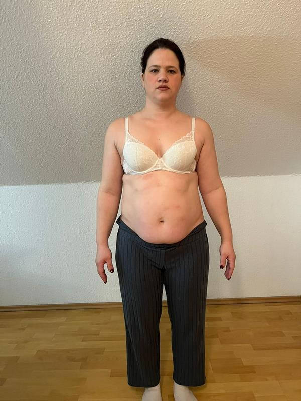
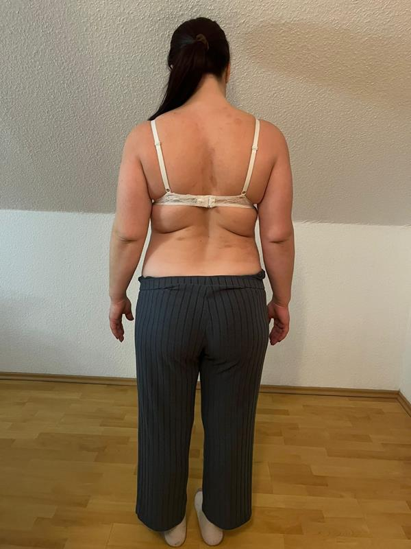
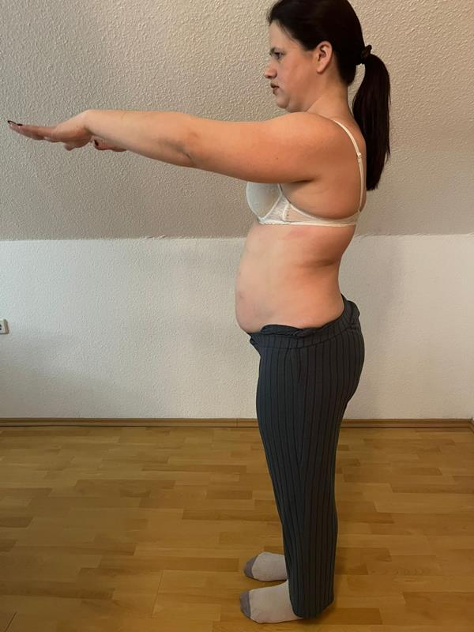
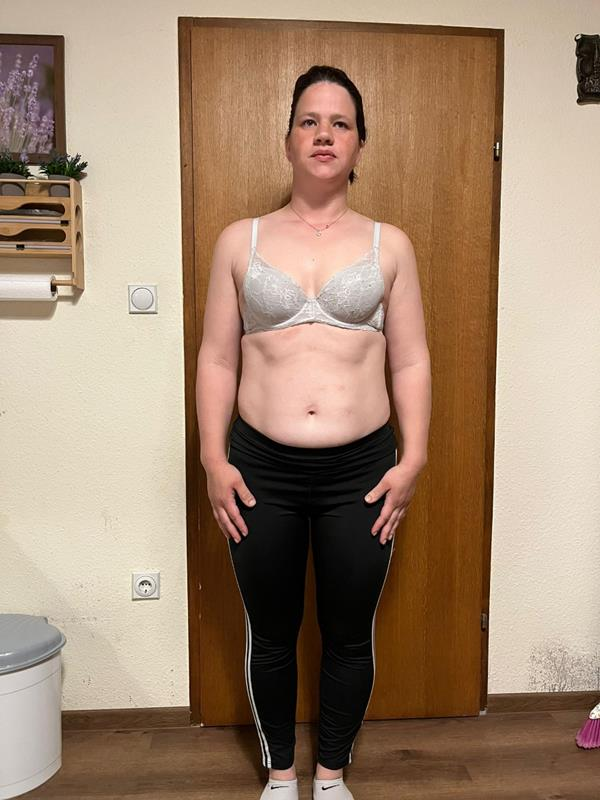
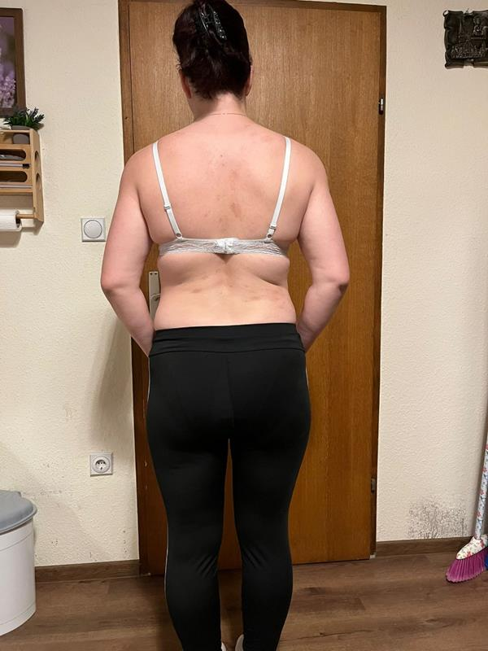
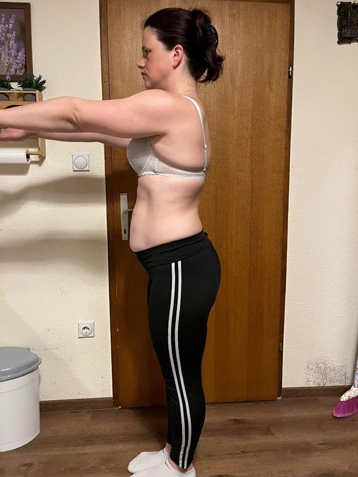
"Dvoje djece, puno posla, nula vremena. Benjamin je sve složio oko mog stvarnog života."
Ivana
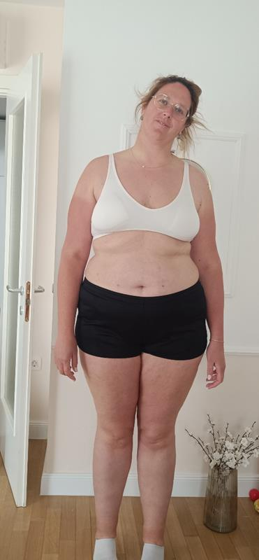
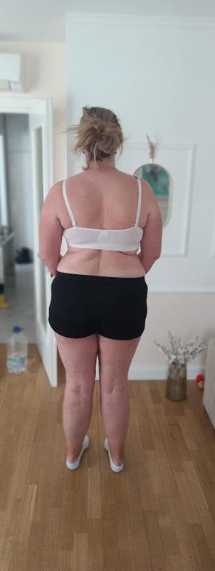
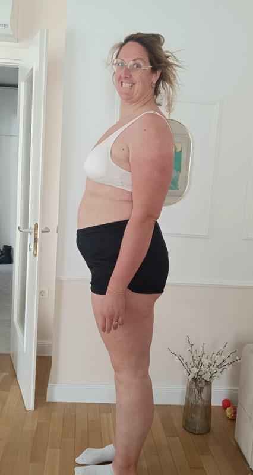
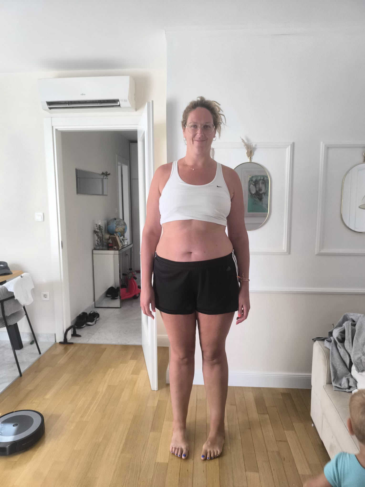
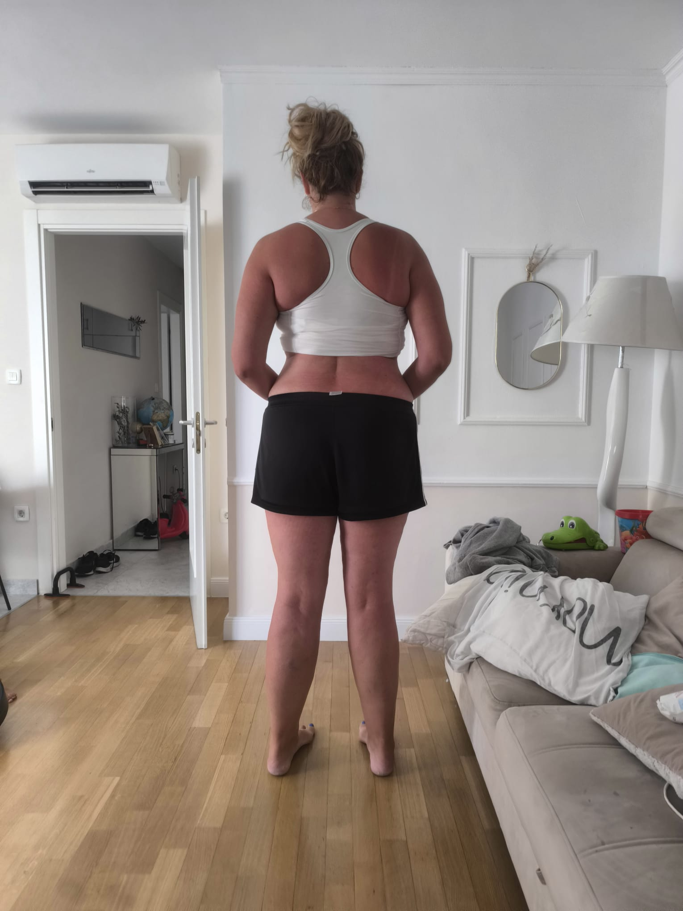
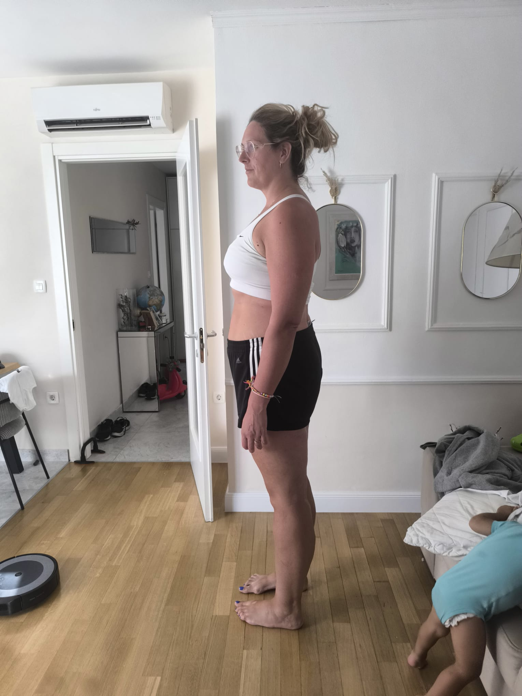
"Mislila sam da je s 40+ kasno. Danas sam jača i sigurnija nego ikad."
Dragica
Ako je krenulo njima, možda je moguće i tebi.